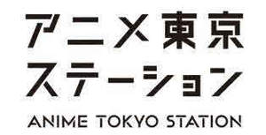

Trade Mark Journal No.2025/013 28 March 2025
UK00004152320 24 January 2025 (9,16,25,28,30,32,35,41,42)

- Class 9
- Photographic machines and apparatus; batteries and cells; computer hardware; computer software; computers application software for personal digital assistants; downloadable graphics file or dynamic image file; cell phone straps; neck strap for a mobile phone; game programs for arcade video game machines; cinematographic machines and apparatus; optical machines and apparatus; telecommunication machines and apparatus; personal digital assistants; electronic machines, apparatus and their parts; spectacles, eyeglasses and goggles; game programs for home video game machines; electronic circuits and CD-ROMs recorded with programs for hand-held games with liquid crystal displays; metronomes; electronic circuits and CD-ROMs recorded with automatic performance programs for electronic musical instruments; electric and electronic effects units for musical instruments; phonograph records; downloadable musical file; downloadable graphics file; recorded video discs and video tapes; electronic publications; exposed cinematographic films; slide films; slide film mounts; program for slot machines (gaming machines); program for pachinko (Japanese pinball). .
- Class 16
- Pastes and other adhesives for stationery or household purposes; envelope sealing machines for offices; stamp obliterating machines; drawing instruments; handkerchiefs of paper; printed paper for lot (other than toy); stationery; cards; trading cards; calendars; pamphlets; printed matter; magazines (publication); books; diaries; newsletters; picture postcard; posters; container for a package made of paper; bags or pouches of plastics for packaging; banners of paper; flags of paper; hygienic hand towels of paper; towels of paper; table napkins of paper; hand towels of paper; paper and cardboard; paintings and calligraphic works; photographs; photograph stands; baggage tags; assorted pieces of folding paper (Origami); assorted pieces of colored paper (paper toy); coloring pictures.
- Class 25
- Clothing; coat; sweaters; shirts; nightwear; underwear; swimwear; bathing suits; swimming caps; bathing caps; camisoles; tee-shirts; nightcaps; headgear for wear; shoes; boots; masquerade costumes; clothes for sports (other than clothes for water sports); special footwear for sports; Japanese traditional clothing; garters; sock suspenders; suspenders (braces); waistbands; belts (clothing); footwear.
- Class 28
- Toys; dolls; dominoes; playing cards; Japanese playing cards (Hanafuda); game machines and apparatus; sports equipment; arcade video game machines; home computer game toys; amusement machines and apparatus for use in amusement parks; toys for pets; Go games; Japanese chess (Shogi games); Japanese playing cards (Utagaruta); dice; Japanese dice games (Sugoroku); cups for dice; Chinese checkers (games); Chess games; checkers (checker sets); conjuring apparatus; mah-jong; billiard equipment; fishing tackle; butterfly nets; choking glass tubes for killing caught insects; poisonous pots for killing caught insects; controllers for game consoles; video game machines; joysticks for video games; card game tools; trading cards for games.
- Class 30
- Confectionery (except for what uses meat, a fish, fruit, vegetables and legumes, or nuts as a main raw material); bread; sandwiches; steamed buns stuffed with minced meat (Chuka-manjuh); hamburgers (sandwiches); pizza; hot dog sandwiches; meat pies; coffee; prepared cocoa and cocoa-based beverages; oolong tea (Chinese tea); black tea (English tea); tea of salty kelp powder (Kombu-cha); Mugi-cha (roasted barley tea); Japanese green tea; Chinese stuffed dumplings (Gyoza); Chinese steamed dumplings (Shumai); Sushi; fried balls of batter mix with small pieces of octopus (Takoyaki); Boxed lunches consisting of rice, with added meat, fish or vegetables; ravioli; instant jelly mixes; instant doughnut mixes; instant pudding mixes; instant pancake mixes; mixes for making sweet adzuki-bean jelly; basis of instant confectioneries namely, instant jelly mixes, instant doughnut mixes, instant pudding mixes, instant pancake mixes, mixes for making sweet adzuki-bean jelly, instant cake mixes, instant cookie mixes ; ice cream mixes; sherbet mixes; tea; ice; seasonings; spices; unroasted coffee beans; cereal preparations; chocolate spread; pasta sauce; rice; husked oats; husked barley.
- Class 32
- Beer; carbonated drinks; refreshing beverages; fruit juices; vegetable juices (beverages); whey beverages.
- Class 35
- Retail services or wholesale services for clothing; retail services or wholesale services for footwear; retail services or wholesale services for food and drink; retail services or wholesale services for alcoholic beverage; retail services or wholesale services for confectionery and bread; retail services or wholesale services for carbonated drinks, refreshing beverages and fruit juices; retail services or wholesale services for tea, coffee, prepared cocoa and cocoa-based beverages; retail services or wholesale services for printed matter; retail services or wholesale services for paper, cardboard and stationery; retail services or wholesale services for sports goods; retail services or wholesale services for toys, dolls and amusement tools; retail services or wholesale services for bags and pouches; Retail services or wholesale services for woven textile goods for personal use and key rings; retail services or wholesale services for meat; retail services or wholesale services for sea food; retail services or wholesale services for vegetables and fruit; retail services or wholesale services for rice; retail services or wholesale services for milk; retail services or wholesale services for processing food; retail services or wholesale services for motor cars; retail services or wholesale services for two-wheeled motor vehicles; retail services or wholesale services for bicycles; retail services or wholesale services for furniture; retail services or wholesale services for kitchen utensils, cleaning tools and washing utensils; retail services or wholesale services for pharmaceutical preparations and medical-assistance article; retail services or wholesale services for cosmetics, dentifrices and soaps and detergents; retail services or wholesale services for flowers and trees; retail services or wholesale services for fuel; retail services or wholesale services for musical instruments and phonograph records; retail services or wholesale services for photographic machines and apparatus and photographic supplies; retail services or wholesale services for clocks, watches and spectacles (eyeglasses and goggles), retail services or wholesale services for tobaccos and smokers’ articles; retail services or wholesale services for jewelry, semi-wrought precious stones and their imitations; Retail services or wholesale services for pet products; retail services or wholesale services for electrical machinery and apparatuses.
- Class 41
- Arranging, conducting and organization of seminars; providing electronic publications; services of reference libraries for literature and documentary records; publication of books; arranging and planning of movies, shows, plays or musical performances; movie theatre presentations or movie film production and distribution; production of radio or television programs; providing facilities for movie, shows, plays, music or educational training; operating lotteries; dubbing; educational and instruction services relating to arts, crafts, sports or general knowledge; animal training; plant exhibitions; animal exhibitions; book rental; art exhibitions; gardens for public admission; caves for public admission; providing videos from the Internet, not downloadable; providing digital music from the Internet, not downloadable; presentation of live show performances; direction or presentation of plays; presentation of musical performances; production of videotape film in the field of education, culture, entertainment or sports (not for movies or television programs and not for advertising or publicity); directing of radio and television programs; operation of video and audio equipment for the production of radio and television programs; organization, arranging and conducting of sports competitions; organization of entertainment events excluding movies, shows, plays, musical performances, sports, horse races, bicycle races, boat races and auto races; organization, arranging and conducting of horse races; organization, arranging and conducting of bicycle races; organization, arranging and conducting of boat races; organization, arranging and conducting of auto races; providing audio or video studio services; providing sports facilities; providing amusement facilities; booking of seats for shows; rental of cinematographic machines and apparatus; rental of cine-films; rental of musical instruments; rental of sports equipment; rental of television sets; rental of radio sets; rental of records or sound-recorded magnetic tapes; rental of image-recorded magnetic tapes; rental of film negatives; rental of reversal film; toy rental; rental of amusement machines and apparatus; rental of game machines and apparatus; rental of paintings and calligraphic works; photography; language interpretation; translation; rental of cameras; Rental of optical machines and apparatus (except for telescopes) for entertainment or educational purposes; entertainment services provided in virtual environments; providing online virtual guided tours; organization of entertainment events in virtual environments; art exhibitions in virtual environments; arranging exhibitions in virtual environments for entertainment purposes; arranging, conducting and organization of seminars in virtual environments.
- Class 42
- Design, creation or maintenance of Internet websites; providing meteorological information; design services; computer software design, computer programming, or maintenance of computer software; technological advice relating to computers, automobiles and industrial machines; rental of computers; providing computer programs.
The Association of Japanese Animations
Representative: Lysaght